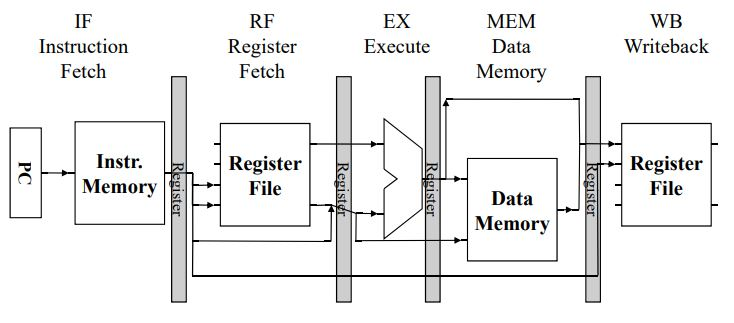
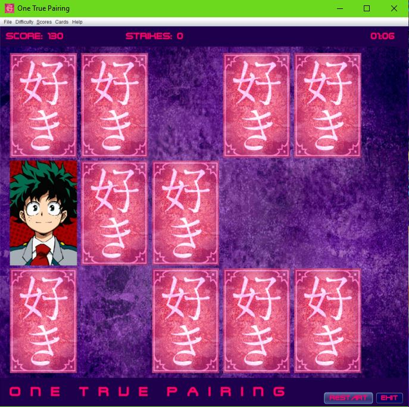

Current Projects
Limited Instruction Set RISC Microprocessor
For my Computer Architecture class, I developed a Verilog implementation of a simple RISC microprocessor based on the ARM instruction set. The microprocessor can understand and complete just a dozen ARM instruction types. In this project, I created a register file and ALU unit for the microprocessor using Verilog code. Once I got this part working, I modified my code to recieve instructions in using a 5-stage pipeline. I also implemented some forwarding to improve the performance of the microprocessor.
Previous Projects
DDR Game Using an FPGA
In Winter 2017, I designed and built asimple DDR game using an FPGA and an LED array. This project was a bit
tricky for me, since it was often hard to debug when a problem occured.
The DDR game is played using 4 small buttons,
each coresponding to a column in the game. The goal of the game is to press the right button when the light in that
column reaches the lit row near the top. If the button was pressed near it, the user gets partial credit. each arrow missed
causes the user to lose points.
The user's score is displayed on a hex display, and the game can be restarted by flipping the reset switch.
Java Card Game
In Summer 2017, I developed a simple card matching game using Java. I made this game after my sister asked me to make a game where you pair couples together. In the game, the user flips 2 cards over at a time and tries to find matches. However, there is always an odd number of cards, so one card is called the "old maid". If the user clicks on this card 3 times, they lose and the game ends. The program stores high scores and allows the scores to be sorted by best time or best score. Later, I added an option for the user to change the card images or add their own.
